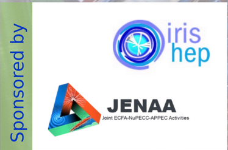

The MODE Workshop series on Differentiable Programming for Experiment Design
Welcome to the reference page for the MODE workshop series on Differentiable Programming for Experiment Design by the MODE Collaboration.
NEW!!! Third MODE Workshop on Differentiable Programming for Experiment Design
Details
When:
The workshop will take place on 24--26 July 2023, in
Princeton University (USA))
with a hybrid form (in person and online).
Workshop agenda:
The scientific program, as well as registration, travel, and accomodation information, will be available soon at the scientific program.
The program will includ a poster session and a data challenge. For both competitions we will award prizes to the best submissions.
Some financial support is available to support the participation of several young scientists. Information on how to apply for financial support can be made via the registration page.
Organizing Committee (preliminary)
- Tommaso Dorigo (INFN-PD)
- Peter Elmer (Princeton)
- Nicolas Gauger (TU-Kaiserslautern)
- Andrea Giammanco (UCLouvain)
- Pietro Vischia (UOviedo)
- Gordon Watts (UWashington)
- XXX YYY (secretariat) (Princeton)
Second MODE Workshop on Differentiable Programming for Experiment Design
Details
When:
The workshop took place on 12--16 September 2022, in
OAC (Crete))
with a hybrid form (in person and online).
Workshop agenda:
Please consult the scientific program, which includes the presentation files and recordings.
The program included a poster session and a data challenge. For both competitions we awarded prizes to the best submissions.
We have been able to financially support the participation of several young scientists.
Organizing Committee
- Pietro Vischia (UCLouvain)
- Tommaso Dorigo (INFN-PD)
- Nicolas Gauger (TU-Kaiserslautern)
- Andrea Giammanco (UCLouvain)
- Giles C. Strong (INFN-PD)
- Gordon Watts (UWashington)
- Stéphanie Landrain (secretariat) (UCLouvain)
First MODE Workshop on Differentiable Programming for Experiment Design
Details
When:
The workshop has taken place on 6--8 September 2021 in
CP3, Université catholique de Louvain with a hybrid form (in person and online).
Workshop agenda:
Please consult the scientific program, which includes the presentation files and recordings.
Organizing Committee
- Pietro Vischia (UCLouvain)
- Christophe Delaere (UCLouvain)
- Tommaso Dorigo (INFN-PD)
- Andrea Giammanco (UCLouvain)
- Giles Strong (INFN-PD)
- Carine Baras (secretariat) (UCLouvain)
- Carinne Mertens (secretariat) (UCLouvain)
Scientific Advisory Committee for the series
- Kyle Cranmer (New York U., HEP/ML)
- Julien Donini (U. Clermont Auvergne, HEP)
- Andrea Giammanco (U. Cath. Louvain, HEP/Muon Tomography)
- Atilim Gunes Baydin (Oxford U., CS)
- Piero Giubilato (U. Padova, hadron therapy)
- Gian Michele Innocenti (CERN, nuclear physics/ML)
- Michael Kagan (SLAC, HEP/CS)
- Riccardo Rando (. Padova, astro-HEP)
- Roberto Ruiz de Austri Bazan (IFIC Valencia, astro-HEP)
- Kazuhiro Terao (Columbia U., neutrino/ML)
- Andrey Ustyuzhanin (Higher School of Economics, Nat. Res. Univ. Moscow, CS)
- Christoph Weniger (U. Amsterdam, astro-HEP)
Sponsors
This workshop is sponsored by JENAA and by IRIS-HEP! We thank both organizations for their kind support!!!

Code of Conduct
We will abide by the IRIS-HEP code of conduct: complaints can be sent to any member of the MODE Workshop organizing committee